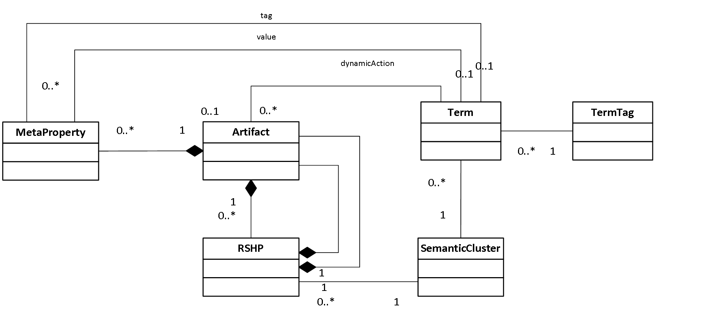

This family of documents defines the Open Services for Lifecycle Collaboration Knowledge Management and Definition specification, also known as OSLC KM. These documents collectively define the OSLC KM 1.0 specification. This specification supports key REST APIs for Knowledge Management systems. OSLC KM 1.0 takes an open, loosely coupled approach to specific lifecycle integration scenarios. The scenarios and this V1.0 specification were created by the Knowledge Reuse Group (UC3M) and The Reuse Company (TRC).
This specification builds on the Open Services for Lifecycle Collaboration (OSLC) Core v2.0 Specification to define the resources, properties and operations supported by an OSLC Knowledge Definition and Management (OSLC-KM) provider.
Knowledge Management resources include Concepts, Concepts Collections, Relationships, Relationships Collections, Semantics, Semantics Collections, Artifacts, Artifacts Collections, Metaproperties and Metaproperties Collections and supporting resources defined in the OSLC Core specification. The properties defined describe these resources and the relationships between resources. Operations are defined in terms of HTTP methods and MIME type handling. The resources, properties and operations defined do not form a comprehensive interface to Knowledge Definition and Management, but instead target specific integration use cases.
Notation
The key words “MUST”, “MUST NOT”, “REQUIRED”, “SHALL”, “SHALL NOT”, “SHOULD”, “SHOULD NOT”, “RECOMMENDED”, “MAY”, and “OPTIONAL” in this document are to be interpreted as described in RFC2119. Domain name examples use RFC2606.
This document defines a Knowledge Management Specification. It is based on existing Open Services for Lifecycle Collaboration (OSLC) documents following a similar structure and reusing some of the common contents.
This document has also followed the guidelines by W3C and its tool Respec to provide a common visual format to other existing specifications.
If you wish to make comments regarding this document, please send them to this repository. All comments are welcome.
This is a draft document and may be updated, replaced or obsoleted by other documents at any time. It is inappropriate to cite this document as other than work in progress.
Introduction
The creation and spreading of organization’s knowledge is a crucial activity in today’s knowledge economy. Knowledge is becoming a commodity that is embedded in products, business or manufacturing processes and it is also embedded in the tacit knowledge of employees. Thus, knowledge is a kind of new intellectual asset that can be used to transform a simple organization in a learning organization, creating a real collaborative environment, reducing costs and time to market, generating competitive advantage and taking the most of existing tools and techniques to improve the daily work activities. Knowledge as a kind of asset includes also some relevant characteristics.
- Use of knowledge does not consume it.
- Transfer of knowledge does not imply losing it.
- Knowledge is abundant; the problem lies on the proper use and exploitation.
- Much of an organization’s valuable knowledge walks out the door at the end of the day.
In this sense knowledge management, as a concept, has been widely studied, it was initially defined in [2] as the process of applying a systematic approach to the capture, structuring, store, management and dissemination of knowledge pieces throughout an organization to work faster, reuse best practices and reduce costs. Building on the previous definitions, other valuable definitions can be found in [3], [4], [5] ,[6] or [7]. Although it is hard to draw big differences among the different approaches and definitions, it is possible to extract a common agreement on the processes and on the needs to share data, information and knowledge within the organization, see Figure 1.
In our opinion, based on the experience and on existing works, the next underlying necessities are considered the cornerstone to successfully address the challenge of taking the most of the knowledge generated in a business process:
- Representation of every piece of knowledge under a common and shared data model.
- Interoperability and integration between processes.
- Other issues regarding provenance of information, graphical representation of every knowledge item or common services that can be implemented on top of these knowledge items, are other key points to address in a knowledge-based environment to develop a real and holistic knowledge-based strategy.

Figure 1: Common processes in Knowledge Management, adapted from [8].
In this sense, one of the cornerstones to provide the proper knowledge management services lies on the selection of an adequate knowledge representation paradigm. After a long time [9], this problem still persists since the choice of a suitable representation format (and syntax) can be reached in several ways. Obviously, different types of knowledge require different types of representation [10] [11] including a type of inference process and a target type of dynamic system. In this light, expressions, rule-based systems, regular grammars, semantic networks, object-oriented representations, frames, intelligent agents or case-based models to name a few are some of the main approaches to information and knowledge modeling.
Figure 2: Semantic Web Stack (2005-The Two Towers) vs Semantic Web Stack (2015)
More specifically, knowledge management implies the standardization of data and information, that is, any bit of information must be structured and stored for supporting other application services, creating an impedance mismatch between the system and the outside world. In this sense, semantic networks seem to be a very good candidate to represent any general knowledge item with the aim of describing and linking different types of information using relationships. In particular, two main approaches can be highlighted for the purpose of knowledge representation (input/output interface and internal representation in the context of Systems Engineering):
- The Resource Description Framework [12] (RDF) is a framework for representing information resources in the Web using a directed graph data model. The core structure of the abstract syntax is a set of triples, each consisting of a subject, a predicate and an object. A set of such triples is called an RDF graph. AN RDF graph can be visualized as a node and directed-arc diagram, in which each triple is represented as a node-arc-node link. Assume there are a pairwise disjoint unlimited sets I (IRIs- Internationalized Resource Identifier), B (Blank nodes) and L (Literales). A triple (s,p,o) ε (I∪B) × I × (I ∪ B ∪ L) is called an RDF triple. In this triple, s is the subject,p the predicate and o the object. According to this definition an RDF triple encodes an RDF statement, a simple logical expression and an RDF graph is the conjunction (logical AND) of its triples. An IRI within an RDF is a UNICODE string to uniquely represent an information resource. A blank node is a local resource identified by an IRI and a literal in an RDF graph consists of two main elements:
- a lexical form, being a UNICODE string, a data type IRI, being an IRI to identifying a data type that determines how the lexical form maps to a literal value and if and only if the data IRI is rdf:langString and
- a non-empty language tag.
RDF has been used as underlying data model for building RDFS/OWL ontologies, gaining momentum in the web-based environment due to the explosion of the Semantic Web and Linked Data initiatives that aim to represent and exchange data (and knowledge) between agents and services under the web-based protocols.
- RDF Schema (RDFS) provides a data-modeling vocabulary for RDF data. It can be seen as a first try to support the creation of formal and simple ontologies with RDF syntax. RDFS is a formal and simple ontology language in which it is possible to define class and property hierarchies, as well as domain and range constraints for properties. One of the benefits of this property-centric approach is that it allows anyone to extend the description of existing resources.
OWL (Ontology Web Language) is an ontology language for capturing meaningful generalizations about data in the Web. It includes additional constructors for building richer class and property descriptions (vocabulary) and new axioms (constraints), along with a formal semantics. OWL 1.1 consists of three sub-languages with different levels of expressivity: 1) OWL Lite, 2) OWL DL (Description Logic) and 3) OWL Full.
The OWL 2.0 family defines three different profiles: OWL 2 EL (Expressions Language), OWL 2 QL (Query Language) and OWL RL (Rule Language). These profiles can be seen as a syntactic restriction of the OWL 2 Structural Specification and more restrictive than OWL DL. The use of profiles is motivated by the needs of different computational processes. OWL EL is designed for enabling reasoning tasks in polynomial time. The main aim of OWL 2 QL is to enable conjunctive queries to be answered in LogSpace using standard relational database technology. Finally, OWL 2 RL is intended to provide a polynomial time reasoning algorithm using rule-extended database technologies operating directly on RDF triples. In conclusion, OWL 2.0 adds new functionalities regarding OWL 1.x. Most of them are syntactic sugar but others offer new expressivity : keys, property chains, richer datatypes, data ranges, qualified cardinality restrictions, asymmetric, reflexive, and disjoint properties; and enhanced annotation capabilities
- RIF Core (Rule Interchange Format) comprises a set of dialects to create a standard for exchanging rules among rule systems, in particular among Web rule engines. RIF was designed for exchanging rather than developing a single one-fits-all rule language. RIF dialects fall into three broad categories: first-order logic, logic-programming, and action rules. The family of dialects comprises: 1) logic-based dialects (RIF-BLD) including languages that employ some kind of logic such as First Order Logic (usually restricted to Horn Logic) or non-first-order logics; 2) rules-with-actions (RIF-PRD) dialects comprising rule systems such as Jess, Drools and JRules as well as event-condition-action rules such as Reaction RuleML and XChange. RIF also defines compatibility with OWL and serialization using RDF.
-
The RSHP (RelationSHip, pronounced arship.) knowledge representation model [13] [14] is a universal representation schema for representing all kinds of documents/models/resources produced by industrial organizations using a conceptual graph model. RSHP is based on the ground idea that whatever information can be described as a group of relationships between concepts. Therefore, the leading element of an information unit is the relationship. For example, Entity/Relationship data models are certainly represented as relationships between entity types; software object models can also be represented as relationships among objects or classes; in the process modeling area, processes can be represented as causal/sequential relationships between sub-processes. Moreover, UML or SysML meta-models can also be modeled as a set of relationships between meta-model elements. RSHP also includes a repository model to store information and relationships with the aim of reusing all kind of knowledge chunks. Furthermore, free text information can certainly be represented as relationships between terms by means of the same structure. Indeed, to represent human language text, a set of well-constructed sentences, including the subject+verb+predicate (SVP) should be used. The SVP structure can be then considered as a relationship typed V between the S and the predicated P. More specifically, the RSHP formal representation model, see Figure 3 , is based on the following principles:
- The main description element is the relationship since it is the element in charge of linking knowledge elements.
- A Knowledge Element (KE) is an atomic knowledge component that appears into an artifact and that is linked by one or more relationships with other KEs to build information. It is defined by a concept, and it can also be an artifact (an information container found inside a wider artifact). A concept is represented by a normalized term (a keyword coming from a controlled vocabulary, or domain). Artifacts are knowledge containers of KEs and their relationships.
In RSHP, the simple representation model for describing the content of whatever artifact type (requirements, risks, architectural models, physical models, tests, maps, text docs or source software code) should be: RSHP representation for artifact α = i_α = {(RSHP_1 ),(RSHP_2 ),…,(RSHP_n )} where every single RSHP is called RSHP-description and must be described using KE. One important consequence of this representation model is that there is no restriction to represent a particular type of knowledge. Furthermore, RHSP has been widely used as underlying information model to build general-purpose indexing and retrieval systems, domain representation models [14], quality assessment of requirements and knowledge management tools such as knowledgeMANAGER [15]

Figure 3: The RSHP representation model using UML.
Obviously, a plethora of other knowledge representation mechanisms and paradigms can be found as it is presented below. However, we focus here on comparing those that satisfy the three basic requirements of this study: 1) a language for representing any artifact metadata and contents; 2) a system for indexing and retrieval and 3) a standard input/output interface (data shape+REST+RDF) to share and exchange artifact metadata and contents.
- The SBVR (Semantics of Business Vocabulary and Rules). It is an OMG standard to define the basis for formal and detailed natural language declarative description of a complex entity.
- The Ontology Definition Metamodel (ODM). It is an OMG standard for knowledge representation, conceptual modeling, formal taxonomy development and ontology definition. It enables the use of a variety of enterprise models as starting points for ontology development through mappings to UML and MOF. ODM-based ontologies can be used to support: 1) interchange of knowledge; 2) representation of knowledge in ontologies and knowledge bases; and 3) specification of expressions that are the input to, or output from, inference engines.
- The Reusable Asset Specification (RAS), an OMG standard that addresses the engineering elements of reuse. It attempts to reduce the friction associated with reuse transactions through consistent, standard packaging.
Discussion and Evaluation
As a summary of both approaches,the following table shows the main characteristics and capabilities that can be found in RDF and RSHP with special focus on those regarding knowledge management and, more specifically knowledge representation. Nevertheless, the main difference lies on the expressivity, the underlying data model and the operations they support:
- RDF is based on a directed graph and can only represent binary relationships (unless reification and blank nodes are used) while RSHP is based on an undirected graph and it can natively represent N-ary relationships.
- RDF is built on two main concepts: resources and literals. Nevertheless, a literal value cannot be used as the subject of an RDF triple. Although this issue can be overcame using a blank node (or even reification) and the property rdf:value, it also adds extra complexity for agents that are going to generate and process RDF. In RSHP it is possible to create a relationship between a literal value (a knowledge element) as another resource.
- Although RDF provides the concept of container to link a resource to a set of elements (rdf:Bag, rdf:Seq or rdf:Alt), a property linking to a container does not intrinsically mean composition or aggregation that is very useful when specifying the structure of a work product. On the other hand, RSHP representation model provides constructors to express these kind of relationships.
- There is also a lack of tools natively working on RDF. General speaking, RDF was conceived to exchange information over the web so, although some RDF repositories can provide capabilities for indexing and searching RDF resources through an SPARQL interface, the experience has demonstrated that most of times RDF is translated into the native data model of a tool. Thus, the possibility of supporting cross-cutting services such as semantic indexing and retrieval processes is constrained by the native capabilities and data models of third-party tools.
- RDFS is a good candidate for modeling lightweight formal ontologies including some interesting capabilities close to object-oriented models. It can be serialized as RDF, but this issue can also be a disadvantage due to expressivity restrictions of RDF. Again, RDFS has been designed for expressing logical statements that describe web resources, so its use for other types of information is not advisable.
- Building on the previous discussion, OWL presents a family of logic dialects for knowledge representation. It is based on strong logic formalisms such as Description Logic or F-Logic. It was also designed for asserting facts about web resources although it can be used as a general logic framework for any type of knowledge. One of the main advantages of OWL is the possibility of performing reasoning processes to check consistency or infer types. However, reasoning can be considered harmful in terms of performance and most of times it is not necessary when data is being exchanged. Besides, OWL is not the best candidate for data validation, a key process in knowledge exchange.
- RIF Core and the family of RIF dialects have been included in this comparison due to the fact that most of domain knowledge is embedded in rules. Nevertheless, RIF was not designed for data validation and its acceptance is still low (just a few tools export RIF and less are capable of importing RIF files). On the other hand, RIF makes use of the web infrastructure to exchange rules, what means also that this environment is a very good candidate to exchange data, information and knowledge.
- RSHP, based on relationships, allows domain experts to create relationships between terms, concepts or even artifacts (containers). It provides a framework for knowledge representation with capabilities for expressing any kind of cardinality and N-ary relationships. RSHP is based on undirected property graphs, enhancing expressivity. Although it has not been directly designed for data validation, its metamodel allows the possibility of checking cardinality, value, domain and range restrictions. One of the strong points of RSHP is the native support of a tool such as knowledgeMANAGER and the possibility of automatically providing semantic indexing and retrieval mechanisms. Both have generated a strong acceptance and implantation in the industry for requirements authoring and quality checking. As minor drawbacks, this tool was not conceived to be used in a web environment and it is not a standard; nevertheless, it can export/import RDFS and OWL ontologies.
Finally, as a general comment, there is also a lack of tools working natively on RDF. Generally speaking, RDF was conceived to exchange information over the web. Although some RDF repositories can provide capabilities for indexing and searching RDF resources through an SPARQL interface, the experience has demonstrated that most of times RDF is translated into the native data model of a tool. Thus, the possibility of supporting cross-cutting services such as semantic indexing and retrieval processes is constrained by the native capabilities and data models of third-party tools.
Other minor differences such as target design and use, underlying semantics, query language and storage are also relevant but somehow compatible.
In addition to these points, it is also necessary to remark that RDFS (RDF Schema) and OWL (Ontology Web Language) were defined as frameworks to provide constructors or primitives to design formal ontologies (with some underlying logics) that can be serialized in RDF. However, shapes or schemes for managing RDF as a data model (not as a set of logical statements) are still under development (see row “Validation” in the next Figure or PDF file).
Rationale
Recent times have seen the development of the Open Services for Lifecycle Collaboration (OSLC) initiative to tackle some of the existing needs regarding interoperability and integration in the Systems Engineering (SE) discipline. This emerging effort is seeking new methods to easily integrate SE tools and build an ideal development and operations environment. At present time, OSCL is comprised of several specifications to model shared resources between applications with the aim of sharing more data, boosting the use of web-based standards (RDF and HTTP) and delivering robust products through the collaboration of development and operational tools. OSLC Core is now an OASIS standard, for products and services that support all phases of the software and product lifecycle. Its main objective lies in the integration between work-products that support Application Life-cycle Management (ALM) and Product Life-cycle Management (PLM).
In the context of knowledge management, the Assets Management and Tracked Resource Set specifications are the more convenient for these purposes. However, there is no RDF vocabulary to represent information such as a simulation model, a set of executable business rules (in this case the W3C Rule Interchange Format recommendation could be used), a model (there is an on-going effort powered by the OMG to create an OSLC-MBSE specification (Model-Based Systems Engineering) or a physical circuit. On the other hand, some common and useful services such as indexing, naming, retrieval, quality assessment, visualization or traceability must be provided by all tool vendors creating a tangled environment of query languages, interfaces, formats and protocols.
OSLC represents a big step towards the integration and interoperability between the agents involved in the lifecycle development. However, RDF has been also demonstrated [20] to contain some restrictions to represent certain knowledge characteristics such as n-ary relationships [21] and practical issues when dealing with reification [22] and blank nodes [23] preventing the proper use of a linked data environment. On the other hand, some common services such as indexing, retrieval or quality assessment of any kind information are restricted to the internal storage and the query capabilities offered by each particular tool (usually a SPARQL interface). Finally, there is also the need of aligning the OSLC effort to existing standards such as STEP (ISO 10303-“Standard for the Exchange of Product model data”). Although some initial insights can be found, this is an open question that a common knowledge management specification can address enabling the interoperability between different standards.
Knowledge Management processes
As it has been previously outlined and in order to combine RDF and RSHP it is necessary to provide a shape, an OSLC Resource Shape, that defines the entities and relationships in the RHSP representation model to make this specification publicly available and enable the possibility of expressing any piece of knowledge using RSHP. On the other hand and due to the fact that a huge amount of data, services and endpoints based on RDF and the Linked Data principles are already publicly available, a mapping between any RDF vocabulary and RSHP is completely necessary to support backward compatibility and being able to import any piece of RDF data into RSHP.
| Process |
Support |
| Capture |
Access to OSLC repositories in the context of Systems Engineering for all existing specifications and other RDF-based services or SPARQL endpoints |
| Structure/Store |
RDF as public exchange data model and syntax and a universal internal representation model to build the System Knowledge Repository (SKR) |
| Access/Search/Disseminate |
RDF query language (e.g. SPARQL), natural language or a native query language (if any). A set of entities and relationships creating an underlying graph |
| Traceability |
Entity reconciliation based on graph comparison |
| Visualization |
A generic graph-based visualization framework that can show entities and relationships but also interpret them as type of diagram. E.g. Class diagram |
| Exploit |
Index, search, traceability or quality based on the internal representation model |
| Share |
An OSLC interface on top of the SKR that offers both data and services |
| Create |
Third-party tool that exports artifacts using an OSLC-based interface |
Motivation and Objectives
That is why a combination of the aforementioned approaches can create the proper environment for knowledge management using RSHP as a common data model to provide advanced services on knowledge management due to its further development and better fit to work-products produced in industry and RDF as input/output interface for exchanging data due to its well-known dissemination. To do so, two main operations should be designed and implemented:
- Transform the RSHP metamodel into an RDF-based vocabulary or more specifically, into an OSLC Resource Shape. For instance, OSLC has been designed to exchange data between two agents in the same specification but cooperation of agents to support collaborative engineering among different specifications is still open. Furthermore, the type of information that can be exchanged through OSLC is restricted to a set of specifications to represent and serialize knowledge as RDF. Thus, if there is no RDF vocabulary or OSLC Resource Shape to model a type of information, RHSP can be used instead.
- Create a set of mappings to represent any piece of RDF in RSHP (external to internal representation). Thus, it is possible to import any kind of existing RDF data source into RSHP (backward compatibility).
Target Functional Architecture
Figure 5: Functional Architecture and core services for knowledge management based on the OSLC KM specification.
Terminology
The RSHP representation model has been presented in Figure 3. In order to simplify the external view of this model and ease the creation of an OSLC Resource Shape, two main changes, (see Figure 6), have been made in the representation model:
- The classes Artifact and KnowledgeElement have been merged. However, the model keeps all the semantics since an artifact will be considered as a knowledge element (just a concept) when it does not contain any relationship.
- The tag and value of a metaproperty now point to a Term instead of a KnowledgeElement.

Figure 6: The KM representation model using UML as simplification of the RSHP representation model.
It is important to highlight the strategy followed to model the resource shapes of the elements presented in Figure 6. Taking into account that the Linked Data Initiative has seen last times the creation of methodologies, guidelines or recipes to publish RDF-encoded data, we have paid special attention to follow a similar approach reusing existing RDF-based vocabularies. More specifically, the following rules have been applied to create the OSLC resource shapes:
- If there is an RDF-based vocabulary that is already a W3C recommendation or it is being promoted by other standards organization, it must be used as it is creating an OSCL Resource Shape.
- If there is an RDF-based vocabulary but it is just a de-facto standard, it should be used as it is including minor changes creating an OSCL Resource Shape.
- If there is not an RDF-based vocabulary, try to take advantage (reusing properties and classes) of existing RDF-based vocabularies to create the OSLC Resource Shape.
In the particular case of knowledge management, we have selected the Simple Knowledge Organization System (SKOS), a W3C recommendation, to define concepts, since it has been designed for promoting controlled vocabularies, thesauri, taxonomies or event simple ontologies to the Linked Data initiative. That is why, in this model, most of the entities can be considered as a skos:Concept and we have created the shape of this standard definition of concept in the resource oslc_km:Concept.
Base Knowledge Management
Compliance
| Requirement |
Level |
Meaning |
| Unknown properties and content |
MAY / MUST |
OSLC services MAY ignore unknown content and OSLC clients MUST preserve unknown content |
| Resource Operations |
MUST |
OSLC service MUST support resource operations via standard HTTP operations |
| Resource Paging |
MAY |
OSLC services MAY provide paging for resources but only when specifically requested by service consumer |
| Partial Resource Representations |
MUST / MAY |
OSLC services MUST support request for a subset of a resource's properties via the oslc.properties URL parameter retrieval via HTTP GET and MAY support via HTTP PUT |
| Partial Update |
MAY |
OSLC services MAY support partial update of resources using patch semantics |
| Service Provider Resources |
MAY / MUST |
OSLC service providers MAY provide a Service Provider Catalog and MUST provide a Service Provider resource |
| Creation Factories |
MUST / MAY |
OSLC service providers MUST provide at least one creation factory resource for concepts, relationships, metaproperties, semantics and artifacts and MAY provide creation factory resources for collections of the aforemetnioned resources |
| Query Capabilities |
MUST |
OSLC service providers MUST provide query capabilities to enable clients to query for resources |
| Query Syntax |
MUST |
OSLC query capabilities MUST support the OSLC Core Query Syntax |
| Delegated UI Dialogs |
MUST |
OSLC Services MUST offer delegated UI dialogs (for both creation and selection) specified via service provider resource |
| UI Preview |
SHOULD |
OSLC Services SHOULD offer UI previews for resources that may be referenced by other resources |
| HTTP Basic Authentication |
MAY |
OSLC Services MAY support Basic Authentication and SHOULD only do so only over HTTPS |
| OAuth Authentication |
MAY |
OSLC Services MAY support OAuth and MAY indicate the required OAuth URLs via the service provider resource |
| Error Responses |
MAY |
OSLC Services MAY provide error responses using Core defined error formats |
| RDF/XML Representations |
MUST |
OSLC services MUST support RDF/XML representations for OSLC Defined Resources |
| XML Representations |
MUST |
OSLC services MUST support XML representations that conform to the OSLC Core Guidelines for XML |
| JSON Representations |
MAY / MUST |
OSLC services MAY support JSON representations; those which do MUST conform to the OSLC Core Guidelines for JSON |
| HTML Representations |
MAY |
OSLC services MAY provide HTML representations for GET requests |
Specification Versioning
See Core Specification Version 2.0 - Specification Versioning.
Service providers that support the resource formats and services in this specification MUST add an HTTP response header of OSLC-Core-Version with a value of 2.0. Consumers SHOULD request formats and services defined in this document by providing a HTTP request header of OSLC-Core-Version with a value of 2.0. See section below on Version Compatibility with OSLC KM 1.0 Specifications.
This specification reserves, for possible future use, the use of the HTTP header OSLC-KM-Version. OSLC Providers MUST NOT use this HTTP header.
Namespaces
In addition to the namespace URIs and namespace prefixes oslc, rdf, dcterms and foaf defined in the Core Specification Version 2.0, OSLC KM defines the namespace URI of http://trc-research.org/spec/km/ with a preferred namespace prefix of oslc_km.
Furthermore, the SKOS (Simple Knowledge Organization System), a W3C Recommendation, is also defined through the namespace: http://www.w3.org/2004/02/skos/core and prefix: skos. Other semantic-based vocabularies will use the de facto namespace and prefix that can be searched using the service: Prefix.cc.
Resource Formats
In addition to the requirements for Core Specification Version 2.0 - OSLC Defined Resource Representations, this section outlines further refinements and restrictions.
For HTTP GET/PUT/POST requests on all OSLC KM and OSLC Core defined resource types,
Additionally, for HTTP GET,
For HTTP GET response formats for Query requests,
- KM Providers MUST support RDF/XML representations with meda-type
application/rdf+xml.
- KM Providers MUST support XML representations with media-type
application/xml.
- KM Providers MAY support JSON representations with media-type
application/json.
OSLC Providers MAY refuse to accept RDF/XML documents which do not have a top-level rdf:RDF document element. The OSLC Core describes an example, non-normative algorithm for generating RDF/XML representations of OSLC Defined Resources.
In addition to the resource formats defined above, providers MAY support additional resource formats; the meaning and usage of these resource formats is not defined by this specification.
Authentication
See Core Specification Version 2.0 - Authentication. OSLC KM places no additional constraints on authentication.
Error Responses
See Core Specification Version 2.0 - Error Responses. OSLC KM places no additional constraints on error responses.
Pagination
OSLC KM service providers SHOULD support pagination of query results as defined by the OSLC Core Specification. OSLC KM service providers MAY support pagination of a single resource's properties as defined by the OSLC Core Specification.
Requesting and Updating Properties
Requesting Selected Properties
A client may want to request a subset of a resource's properties as well as properties from a referenced resource. In order to support this behaviour a service provider MUST support the oslc.properties and oslc.prefix URL parameter on a HTTP GET request on individual resource request or a collection of resources by query. If the oslc.properties parameter is omitted on the request, or if the value of this parameter is "*", then all resource properties MUST be provided in the response. See OSLC Core Specification - Selective Property Values.
Updating Selected Properties
A provide MAY accept oslc.properties on a PUT with the meaning that only that subset of the resource's properties be updated.
If the parameter oslc.properties contains a valid resource property on the request that is not provided in the content, the server MUST treat that as a request to remove that property from the resource. If the parameter oslc.properties contains an invalid resource property, then a 409 Conflict MUST be returned.
KM Resource Definitions
Property value types that are not defined in the following sections, are defined in Core Specification Version 2.0 - Defining OSLC Properties.
The meaning of the columns in the following table is defined as follows. See also OSLC Core Specification Appendix A: Common Properties for further details on Resource Shapes.
- Occurs: The multiplicity of the property (corresponds to "oslc:occurs" on an "oslc:Property" resource).
- Read-only: Whether the Provider will accept value changes (corresponds to "oslc:readOnly" on an "oslc:Property" resource). "Unspecified" indicates that this specification places no requirements on a Provider's behaviour in this regard.
- Value-type: Corresponds to "oslc:valueType" on an "oslc:Property" resource.
- Representation: Corresponds to "oslc:representation" on an "oslc:Property" resource.
- Range: Corresponds to "oslc:range" on an "oslc:Property" resource. "Any" indicates that this specification places no "oslc:range" constrains on a property. Consumers in particular should not make assumptions about the range of such properties.
- Description: A textual description of the meaning of the property.
KM Resources
| Class |
Resource Shape Name |
Description |
|---|
| Artifact |
oslc_km:Artifact |
A container of: relationships between concepts, metaproperties, etc. to semantically describe any piece of information. It is the basis for the creation of an underlying semantic network (not based on logic formalisms). |
| Metaproperty |
oslc_km:MetaProperty |
A wrapper of a metaproperty containing a tag and value. Both can be any type of resource or, more specifically, concepts.
|
| RSHP |
oslc_km:RSHP |
An RSHP is a wrapper to create a relationship between any set of resources. It is possible to add a semantics and can contain any number of elements representing binary, ternary, etc. relationships. |
| Term |
oslc_km:Concept |
This concept follows the semantics and shape of an skos:Concept. More specifically: "the notion of a SKOS concept is useful when describing the conceptual or intellectual structure of a knowledge organization system, and when referring to specific ideas or meanings established within a KOS (Knowledge Organization System").
|
| SemanticCluster |
oslc_km:Concept |
See previous definition |
| TermTag |
oslc_km:Concept |
See previous definition |
Artifact Resource
| Prefixed Name |
Occurs |
Read-only |
Value-type |
Representation |
Range |
Description |
|---|
dcterms:identifier |
Exactly-one |
True |
String |
Inline |
rdfs:Literal |
The unique identifier for this artifact. |
dcterms:title |
One-or-many |
True |
String |
Inline |
rdfs:Literal |
The title of the artifact used to display a name. |
dcterms:description |
Zero-or-many |
False |
String |
Inline |
rdfs:Literal |
The long description of this artifact that must be explanatory enough to understand what the artifact contains and is used to. |
dcterms:created |
Exactly-one |
True |
DateTime |
Inline |
xsd:dateTimeStamp |
The date and time in which the artifact was created. The range is restricted to a data time stamp, although the Dublin Core allows us to use any rdfs:Literal.
See: http://dublincore.org/documents/dcmi-terms/#terms-created |
dcterms:modified |
Zero-or-many |
False |
DateTime |
Inline |
xsd:dateTimeStamp |
The moment in which the artifact was modified or redefined. The range is restricted to a data time stamp, although the Dublin Core allows us to use any rdfs:Literal.
See: http://dublincore.org/documents/dcmi-terms/#terms-created |
dcterms:creator |
One-or-many |
True |
Resource |
Reference |
foaf:Agent |
The agents (people, organizations or tools) that have defined this artifact. |
oslc_km:term |
Zero-or-one |
False |
Either Resource or Local Resource |
Either Reference or Inline |
oslc_km:Concept |
The lexical form of this artifact (apart from title and description). It is an URI to a concept. |
oslc_km:artifact-type |
Zero-or-one |
True |
Either Resource or Local Resource |
Either Reference or Inline |
oslc_km:Concept |
A link to a concept describing the type of this artifact. E.g. "Class Diagram" |
oslc_km:rshps |
Exactly-one |
False |
Either Resource or Local Resource |
Either Reference or Inline |
rdf:List |
A list of relationships between the concepts within the artifact. Similar to skos:member (actually it is a kind of syntax sugar and the meaning of this property and skos:member is the same). |
oslc_km:metaproperties |
Zero-or-one |
False |
Either Resource or Local Resource |
Either Reference or Inline |
Rdf:List |
A list of metaproperties for this artifact identifed by tag and value. It is a kind of wrapper for two concepts. |
oslc_km:owned-artifacts |
Zero-or-one |
False |
Either Resource or Local Resource |
Either Reference or Inline |
rdf:List |
A list of artifacts that belongs to this artifact. It is similar to skos:member and skos:inScheme but with artifacts instead of concept schemes. |
oslc_km:alt-visualization |
Zero-or-many |
False |
Resource |
Reference |
N/A (Not applicable) |
The alternative visual representation of this artifact using SVG+CSS. |
oslc_km:preferred-visualization |
Zero-or-one |
False |
Resource |
Reference |
N/A |
The preferred visual representation of this artifact using SVG+CSS. |
oslc_km:interpretation |
Zero-or-one |
False |
Resource |
Either Reference or Inline |
N/A |
A complete interpretation of this artifact through a concept description. E.g. Class diagram, etc. |
oslc_km:traced-by |
Zero-or-many |
False |
Resource |
Either Reference or Inline |
Rdf:Resource |
A resource that traces this artifact. |
oslc_km:traces-to |
Zero-or-many |
False |
Resource |
Either Reference or Inline |
Rdf:Resource |
A resource that is being traced by this artifact. |
oslc_km:trace-type |
Exactly-one |
True |
Resource |
Either Reference or Inline |
oslc_km:Concept |
A link to a concept that explains how the trace has been created, etc. This element must be linked to the "trace" node (if any). |
oslc_kpi:dataset |
Zero-or-many |
True |
Resource |
Reference |
Qb:Dataset |
The link to the datasets that contain observations that can affect this artifact. E.g. if a requirement is an artifact, the requirements quality observations would be the dataset linked to the artifact in a certain moment of time. |
dcterms:source |
Zero-or-many |
True |
Resource |
Reference |
Rdf:Resource |
The set of documents that explains why this artifact should be explained. |
oslc_km:access |
Zero-or-one |
False |
Either Resource or Local Resource |
Either Reference or Inline |
N/A |
A link to a resource describing how to access to a HTTP-based resource for gathering contents and convert into an artifact. The W3C HTTP vocabulary (a W3C note) is used to represent the information of an HTTP request. |
oslc:valueShape |
Exactly-one |
False |
Resource |
Either Reference or Inline |
rdf:Resource |
A link to an URI that contains the shape of this artifact. |
oslc_km:contents |
Zero-or-one |
False |
String |
Inline |
rdfs:Literal |
A literal representing the contents of any artifact in RDF. These contents are interpreted following the shape that must be also presented in the description of the artifact. |
oslc_km:sparql-endpoint |
Zero-or-one |
False |
Resource |
Either Reference or Inline |
xsd:anyURI |
An URI pointing to a SPARQL endpoint from which the contents of an artifact will be gathered through a DESCRIBE query. |
Metaproperty Resource
| Prefixed Name |
Occurs |
Read-only |
Value-type |
Representation |
Range |
Description |
|---|
dcterms:identifier |
Exactly-one |
True |
String |
Inline |
rdfs:Literal |
The unique identifier for this metaproperty |
oslc_km:tag |
Exactly-one |
False |
Either Resource or Local Resource |
Either Reference or Inline |
oslc_km:Concept |
A tag for this metaproperty represented through a concept or even any resource. |
oslc_km:value |
Zero-or-one |
False |
Either Resource or Local Resource |
Either Reference or Inline |
oslc_km:Concept |
A value for this metaproperty represented through a concept or even any resource. |
RSHP Resource
| Prefixed Name |
Occurs |
Read-only |
Value-type |
Representation |
Range |
Description |
|---|
dcterms:identifier |
Exactly-one |
True |
String |
Inline |
rdfs:Literal |
The unique identifier for this RSHP. It is now an string but it would be better a skos:Concept to avoid broken links between pieces of data. |
oslc_km:semantics |
Zero-or-one |
True |
Either Resource or Local Resource |
Either Reference or Inline |
rdf:Property |
The concept (property) that represents the semantics of this relationship. |
oslc_km:from |
Zero-or-one |
False |
Resource |
Either Reference or Inline |
rdf:List |
The list of concepts from which a relationship is created. It is similar to skos:member but a new name used to provide a more meaningful name.
Status: the name of this property is still open. |
oslc_km:to |
Zero-or-one |
False |
Resource |
Either Reference or Inline |
rdf:List |
The list of concepts to which a relationship is created. It is similar to skos:member but a new name used to provide a more meaningful name.
Status: the name of this property is still open. |
Concept Resource
| Prefixed Name |
Occurs |
Read-only |
Value-type |
Representation |
Range |
Description |
skos:altLabel |
Zero-or-many |
False |
String |
Inline |
rdf:PlainLiteral |
"The preferred and alternative labels are useful when generating or creating human-readable representations of a knowledge organization system. These labels provide the strongest clues as to the meaning of a SKOS concept."
Source: http://www.w3.org/TR/skos-reference/#labels |
skos:broadMatch |
Zero-or-many |
False |
Resource |
Reference |
skos:Concept |
This property is used to state mapping (alignment) links between SKOS concepts in different concept schemes, where the links are inherent in the meaning of the linked concepts.
Source: http://www.w3.org/TR/skos-reference/#L4307 |
skos:broader |
Zero-or-many |
False |
Resource |
Reference |
skos:Concept |
It is a semantic relation used to assert a direct hierarchical link between two SKOS concepts.
Source: http://www.w3.org/TR/skos-reference/#broader |
skos:broaderTransitive |
Zero-or-many |
False |
Resource |
Reference |
skos:Concept |
It is a property used to assert a direct hierarchical link between two SKOS concepts. More specifically, it is used to both direct and indirect hierarchical links between concepts. It is the transitive version of skos:broader.
Source: http://www.w3.org/TR/skos-reference/#broaderTransitive |
skos:changeNote |
Zero-or-many |
False |
String |
Inline |
rdf:PlainLiteral |
It is an annotation property. According to the SKOS recommendation: "There is no restriction on the nature of this information, e.g., it could be plain text, hypertext, or an image; it could be a definition, information about the scope of a concept, editorial information, or any other type of information. ".
Source: http://www.w3.org/TR/skos-reference/#notes |
skos:closeMatch |
Zero-or-many |
False |
Resource |
Reference |
skos:Concept |
It is used to link two concepts that are sufficiently similar that they can be used interchangeably in some information retrieval applications. In order to avoid the possibility of "compound errors" when combining mappings across more than two concept schemes, skos:closeMatch is not declared to be a transitive property.
Source: http://www.w3.org/TR/skos-reference/#L4307 |
skos:definition |
Zero-or-many |
False |
String |
Inline |
rdf:PlainLiteral |
It is an annotation property. According to the SKOS recommendation: "There is no restriction on the nature of this information, e.g., it could be plain text, hypertext, or an image; it could be a definition, information about the scope of a concept, editorial information, or any other type of information. ".
Source: http://www.w3.org/TR/skos-reference/#notes |
skos:editorialNote |
Zero-or-many |
False |
String |
Inline |
rdf:PlainLiteral |
It is an annotation property. According to the SKOS recommendation: "There is no restriction on the nature of this information, e.g., it could be plain text, hypertext, or an image; it could be a definition, information about the scope of a concept, editorial information, or any other type of information. ".
Source: http://www.w3.org/TR/skos-reference/#notes |
skos:exactMatch |
Zero-or-many |
False |
Resource |
Reference |
skos:Concept |
This property is used to link two concepts, indicating a high degree of confidence that the concepts can be used interchangeably across a wide range of information retrieval applications. It is a transitive property, and is a sub-property of close match.
Source: http://www.w3.org/TR/skos-reference/#L4307 |
skos:example |
Zero-or-many |
False |
String |
Inline |
rdf:PlainLiteral |
It is an annotation property. According to the SKOS recommendation: "There is no restriction on the nature of this information, e.g., it could be plain text, hypertext, or an image; it could be a definition, information about the scope of a concept, editorial information, or any other type of information. ".
Source: http://www.w3.org/TR/skos-reference/#notes |
skos:hiddenLabel |
Zero-or-many |
False |
String |
Inline |
rdf:PlainLiteral |
It is a property to label concepts.
Source: http://www.w3.org/TR/skos-reference/#labels |
skos:historyNote |
Zero-or-many |
False |
String |
Inline |
rdf:PlainLiteral |
It is an annotation property. According to the SKOS recommendation: "There is no restriction on the nature of this information, e.g., it could be plain text, hypertext, or an image; it could be a definition, information about the scope of a concept, editorial information, or any other type of information. ".
Source: http://www.w3.org/TR/skos-reference/#notes |
skos:inScheme |
Zero-or-many |
False |
Resource |
Reference |
skos:ConceptScheme |
The scheme (an aggregation of one or more SKOS concepts) to which the concept belongs.
Source: http://www.w3.org/TR/skos-reference/#schemes |
skos:mappingRelation |
Zero-or-many |
False |
Resource |
Reference |
skos:Concept |
It is a mapping property to link concepts. It is the superclass of other mapping properties.
Source: http://www.w3.org/TR/skos-reference/#mapping |
skos:narrowMatch |
Zero-or-many |
False |
Resource |
Reference |
skos:Concept |
This property is used to state mapping (alignment) links between SKOS concepts in different concept schemes, where the links are inherent in the meaning of the linked concepts.
Source: http://www.w3.org/TR/skos-reference/#mapping |
skos:narrower |
Zero-or-many |
False |
Resource |
Reference |
skos:Concept |
It is a semantic relation used to assert a direct hierarchical link between two SKOS concepts.
Source: http://www.w3.org/TR/skos-reference/#broader |
skos:narrowerTransitive |
Zero-or-many |
False |
Resource |
Reference |
skos:Concept |
It is a property used to assert a direct hierarchical link between two SKOS concepts. More specifically, it is used to both direct and indirect hierarchical links between concepts. It is the transitive version of skos:broader.
Source: http://www.w3.org/TR/skos-reference/#broaderTransitive |
skos:notation |
Zero-or-many |
False |
Resource |
Either Reference or Inline |
rdf:PlainLiteral |
It is an annotation property. According to the SKOS recommendation: "There is no restriction on the nature of this information, e.g., it could be plain text, hypertext, or an image; it could be a definition, information about the scope of a concept, editorial information, or any other type of information. ".
Source: http://www.w3.org/TR/skos-reference/#notes |
skos:prefLabel |
Zero-or-many |
False |
String |
Inline |
rdf:PlainLiteral |
The preferred and alternative labels are useful when generating or creating human-readable representations of a knowledge organization system. These labels provide the strongest clues as to the meaning of a SKOS concept.
"A resource has no more than one value of skos:prefLabel per language tag."
Source: http://www.w3.org/TR/skos-reference/#labels |
skos:related |
Zero-or-one |
False |
Resource |
Reference |
skos:Concept |
The property skos:related is used to assert an associative link between two SKOS concepts.
Source: http://www.w3.org/TR/skos-reference/#semantic-relations |
skos:relatedMatch |
Zero-or-many |
False |
String |
Reference |
skos:Concept |
This property is used to state mapping (alignment) links between SKOS concepts in different concept schemes, where the links are inherent in the meaning of the linked concepts. More specifically, it is used to state an associative mapping link between two concepts. |
skos:scopeNote |
Zero-or-many |
False |
String |
Inline |
rdf:PlainLiteral |
It is an annotation property. According to the SKOS recommendation: "There is no restriction on the nature of this information, e.g., it could be plain text, hypertext, or an image; it could be a definition, information about the scope of a concept, editorial information, or any other type of information. ".
Source: http://www.w3.org/TR/skos-reference/#notes |
skos:semanticRelation |
Zero-or-many |
False |
String |
Reference |
skos:Concept |
It is the super property of all mapping and relationship properties. It is used to assert generic semantic relationships between concepts. |
skos:topConceptOf |
Zero-or-many |
True |
Resource |
Reference |
skos:ConceptScheme |
It serves to state that a concept is a root of a concept scheme.
Source: http://www.w3.org/TR/skos-reference/#schemes |
dcterms:creator |
One-or-many |
True |
Resource |
Either Reference or Inline |
foaf:Agent |
The agents (people, organizations or tools) that have defined this concept. |
dcterms:contributor |
Zero-or-many |
False |
Resource |
Either Reference or Inline |
foaf:Agent |
The agents (people, organizations or tools) that have contributed to the definition of this concept. |
dcterms:created |
Exactly-one |
True |
DateTime |
Inline |
xsd:dateTimeStamp |
The time in which this concept has been created. |
dcterms:modified |
Zero-or-many |
False |
DateTime |
Inline |
xsd:dateTimeStamp |
The moment in which this concept has been modified or redefined. |
skos:memberList |
Exactly-one |
False |
Either Resource or Local Resource |
Either Reference or Inline |
rdf:List |
A list of skos concepts (ordered collection) that serves to specify the components of the pattern. |
dcterms:identifier |
Exactly-one |
True |
String |
Inline |
xsd:string |
The unique identifier for this concept. |
Relationship labels
When an KM relationship property is to be presented in a user interface, it may be helpful to provide an informative and useful textual label for that relationship instance. (This in addition to the relationship property URI and the object resource URI, which are also candidates for presentation to a user.) To this end, OSLC providers MAY suppport a dcterms:title link property in RM resource representations where a relationship property is permitted, using the anchor approach outlined in the OSLC Core Links Guidance.
Providers and consumers should be aware that the dcterms:title of a link is unrelated to the dcterms:title of the object resource. Indeed, links may carry other properties with names in common to the object of the link, but there is no specified relationship between these property values.
KM Service Provider Capabilities
Service Provider Resources
Service providers MUST provide one or more oslc:ServiceProvider resources as defined by Core Specification Version 2.0 - Service Provider Resource. Discovery of OSLC Service Provider Resources MAY be via one or more OSLC Service Provider Catalog Resources, or may be discovered by some other and/or additional Provider-specific means outwith the scope of this specification. The oslc:Service resources referenced by this oslc:ServiceProvider MUST have an oslc:domain of http://trc-research.org/spec/km/.
Service providers MAY provide one more more oslc:ServiceProviderCatalog resources as defined by Core Specification Version 2.0 - Service Provider Resources. Any such catalog resources MUST include at least one oslc:domain of http://trc-research.org/spec/km/. Discovery of top-level OSLC Service Provider Catalog Resources is outwith the scope of this specification.
Service providers MUST give an oslc:serviceProvider property on all OSLC Defined Resources. This property MUST refer to an appropriate oslc:ServiceProvider resource.
Creation Factories
Service providers supporting resource creation MUST do so through oslc:CreationFactory resources, as defined by Core Specification Version 2.0 - Creation Factories. Any such factory resources MUST be discoverable through oslc:Service resources. Providers SHOULD provide oslc:ResourceShape resources on oslc:CreationFactory resources as defined by OSLC Core Specification Appendix A: Common Properties - Resource Shapes.
Query Capabilities
Service providers MUST support query capabilities, as defined by Core Specification Version 2.0 - Query Capabilities. Providers SHOULD provide oslc:ResourceShape on oslc:QueryCapability resources as defined by OSLC Core Specification Appendix A: Common Properties - Resource Shapes.
The Query Capability MUST support these parameters:
-
oslc.where
-
oslc.select
-
oslc.properties
-
oslc.prefix
Where oslc:ResourceShape is not supported by the Query Capability, providers SHOULD use the following guidance to represent query results:
The stability of query results is OPTIONAL (see Core Specification Version 2.0 - Stable Paging).
Delegated UIs
OSLC KM service providers MUST support the selection and creation of resources by delegated web-based user interface dialogs Delegated UIs as defined by OSLC Core.
OSLC KM service providers MAY support the pre-filling of creation dialogs based on the definition at Delegated UIs.
Usage Identifiers
OSLC KM service provider MAY identify the usage of various services with additional property values for the OSLC Core defined oslc:usage property on oslc:Dialog, CreationFactory and QueryCapability. The oslc:usage property value of http://open-services.net/ns/core#default SHOULD be used to designate the default or primary service to be used by consumers when multiple entries are found.
There are no additional usage identifiers defined by this specification. OSLC Providers MAY provide their own usage URIs. Such usage URIs MUST be in a non-OSLC namespace.
Media Types
To identify a format of RDF/XML, the media type used for KM resource representations MUST be application/rdf+xml. The usage of the OSLC KM 1.0 defined media types of application/x-oslc-km-artifact-1.0+xml, application/x-oslc-km-artifact-collection-1.0+xml, application/x-oslc-km-service-description-1.0+xml and application/x-oslc-disc-service-provider-catalog+xml is deprecated.
Requesting formats
KM 1.0 consumers wanting to request 1.0 resource formats will not need to change if they used 1.0 defined media types ( application/x-oslc-km*). KM 1.0 consumers should use media types as defined in this specification for requests, excluding the OSLC KM 1.0 specific media types ( application/x-oslc-km*). KM consumers supporting should request request 1.0 media types on HTTP GET requests as usually done with HTTP request parameter Accept giving appropriate quality (See HTTP Accept) weighting to help distinguish their preferred content.
For additional guidance, a KM 1.0 consumer or provider MAY reference the OSLC-Core-Version HTTP header with a value of 2.0.
Open Issues
As it has been outlined in previous sections, the main objective of this specification is to provide a way for representing any piece of knowledge using the RSHP model. Since there are a lot of techniques for knowledge representation, it is important to emphasize that the use of RSHP model is motivated because:
- It has been specially designed for information retrieval purposes and
- it is fully supported in the knowledgeMANAGER tool.
However and with the aim of keeping backward compatibility, a mapping to existing RDF data has been also presented and implemented. This approach allows us to provide a mechanism for those that want to publish RDF data for which there is no shape or vocabulary (RSHP could be sued) and to enable a way of re-using existing RDF data sources. Nevertheless, the transformation of RDF to RSHP has been designed at a graph level so a higher type of transformation (keeping logic formalisms if any) is under study. For instance, an RDFS (RDF Schema) and OWL (Ontology Web Language), W3C standards for ontology construction, mapping to RSHP are ongoing work.
On the other hand, this specification can be also seen as a broader effort, see Figure 6, containing certain parts of existing specifications such as Asset Management and Tracked Resource Set. In this case, these specifications should be merged reusing the existing concepts and properties. Furthermore and in order to support a full knowledge management strategy, the OSLC KM could be extended to:
- Support a kind of formal reasoning or underlying logic formalism.
- Include more provenance information. E.g. W3C Provenance Ontology.
- Expose more services such as traceability of quality checking of any artifact.
- Expose a general-purpose visualization service.
Implementation
The current specification is implemented in the following tools:
References
- D. Morey, M. T. Maybury, and B. M. Thuraisingham, Knowledge management: classic and contemporary works. Cambridge, Mass.: MIT Press, 2002.
- I. Nonaka and H. Takeuchi, The knowledge-creating company: How japanese companies create the dynamics of innovation. New York: Oxford University Press, 1995.
- D. Grey, “Knowledge vs Information.” 1996.
- G. Dosi, R. Nelson, and S. Winter, The nature and dynamics of organizational capabilities. Oxford University Press, 2000.
- T. H. Davenport and L. Prusak, Working knowledge: how organizations manage what they know. Boston, Mass.: Harvard Business School Press, 2000.
- Open University, Managing knowledge: an essential reader, 2nd ed. Thousand Oaks, CA: SAGE Publications, 2005.
- S. M, “Keynote address to ICICKM (International Conference on Intellectual Capital, Knowledge Management and Organisational Learning,” 2008.
- S. McIntyre, M. Gauvin, and B. Waruszynski, “Knowledge management in the military context,” Can. Mil. J., vol. 4, no. 1, pp. 35–40, 2003.
- R. Hull and R. King, “Semantic database modeling: Survey, applications, and research issues,” ACM Comput. Surv. CSUR, vol. 19, no. 3, pp. 201–260, 1987.
- R. Davis, H. Shrobe, and P. Szolovits, “What is a knowledge representation?,” AI Mag., vol. 14, no. 1, p. 17, 1993.
- T. Groza, S. Handschuh, T. Clark, S. Buckingham Shum, and A. de Waard, “A short survey of discourse representation models,” 2009.
- P. Hayes, “RDF Semantics,” World Wide Web Consortium, Feb. 2004.
- J. Llorens, J. Morato, and G. Genova, “RSHP: an information representation model based on relationships,” in Soft Computing in Software Engineering, vol. 159, E. Damiani, M. Madravio, and L. Jain, Eds. Springer Berlin Heidelberg, 2004, pp. 221–253.
- I. Dı́az, J. Llorens, G. Genova, and J. M. Fuentes, “Generating domain representations using a relationship model,” Inf. Syst., vol. 30, no. 1, pp. 1–19, Mar. 2005.
- The Reuse Company Inc., “knowlegeMANAGER (KM),” knowledgeMANAGER, 2014. .
- K. E. Wiegers, Software Requirements, 2nd ed. Redmond, WA, USA: Microsoft Press, 2003.
- T. R. Gruber, “A Translation Approach to Portable Ontology Specifications,” Knowl Acquis, vol. 5, no. 2, pp. 199–220, Jun. 1993.
- N. Guarino, “Formal Ontology, Conceptual Analysis and Knowledge Representation,” Int J Hum-Comput Stud, vol. 43, no. 5–6, pp. 625–640, Dec. 1995.
- D. Beckett, “RDF/XML Syntax Specification (Revised),” W3C, W3C Recommendation, 2008.
- S. Powers, Practical RDF. Beijing; Sebastopol: O’Reilly, 2003.
- N. Noy and A. Rector, “Defining N-ary Relations on the Semantic Web,” W3C Working Group, 2006.
- V. Nguyen, O. Bodenreider, and A. Sheth, “Don’t like RDF reification?: making statements about statements using singleton property,” 2014, pp. 759–770.
- A. Mallea, M. Arenas, A. Hogan, and A. Polleres, “On blank nodes,” in The Semantic Web–ISWC 2011, Springer, 2011, pp. 421–437.
- M. Arenas, A. Bertails, E. Prud’hommeaux, and J. Sequeda, “A Direct Mapping of Relational Data to RDF http://www.w3.org/TR/rdb-direct-mapping/,” 2012.
OSLC Specifications-References